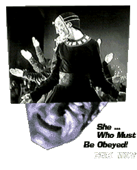

H o r r o r o n t h e S i l e n t S c r e e n

nappy dialogue is what is completely missing from the other goof offering. She ... Who Must Be Obeyed! stars cowboy heartthrob Randolf Scott as an adventurer, and this '30s adventure classic is the sort of lavish, bizarre, ... well, let's just say that Steven Spielberg was profoundly influenced by flicks like this. Merian C. Cooper produced this movie, hoping to make more money from the same folks who saw his King Kong, in fact some of the gates in this Arctic adventure look like set pieces from Kong. The plot makes no sense at all - explorers on a quest for the fountain of youth find a mad queen hiding under a polar ice cap - and it doesn't matter. The huge sets of the palace, the palace of "she ... who must be obeyed," are vast, glossy, deco masterpieces. The ice-bound adventures in this new, crisp clean print, are stunning - the avalanche scene in She makes the ice cave of Mary Shelley's Frankenstein look like something from a Chilly Willy cartoon.The Kino Month of Horror series has films, like Phantom and Nosferatu, that should be seen because they are works of genius, period. The series also offers a wealth of rarely seen and long-lost movie history, and horror and film fans who expect to be taken seriously had better take a look.
She ...
Kino Video
333 West 39th Street, Suite 503
New York, NY 10018
Phone +1 (212) 629 6880
Fax +1 (212) 714 0871
Email: kinoint@infohouse.com
All films $29.95 retail


T H R E A D S : 16 topics, 25 links.
Copyright © 1995 HotWired Ventures LLC. All rights reserved.